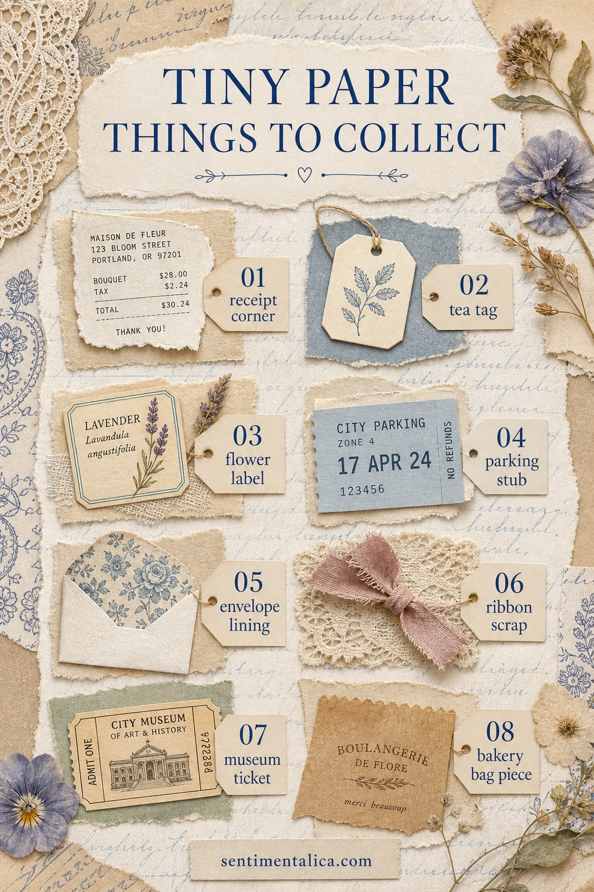
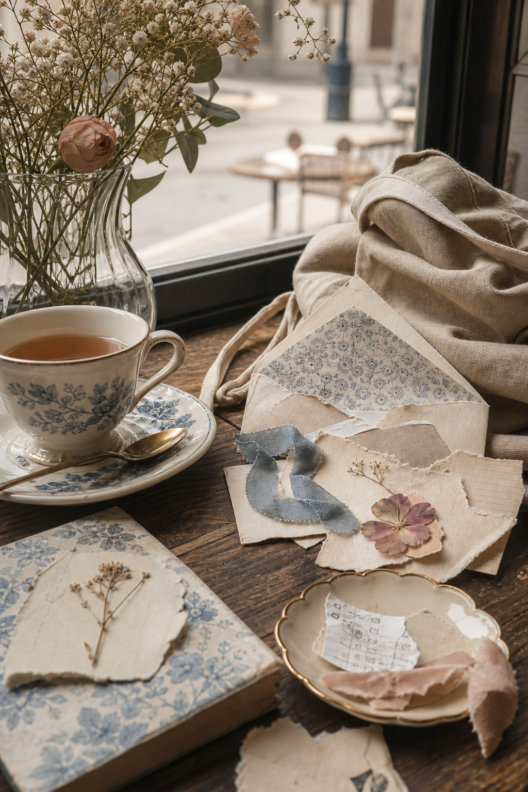

The best journal supplies are often the ones that almost go into the bin. A receipt corner. A tea tag. A label from flowers. A bit of envelope lining. They are ordinary for about five minutes, and then they become evidence that a real day happened.

Collect small, not random
A good paper scrap has one of three things: a nice shape, a useful color, or a memory attached to it. If it has none of those, let it go. The goal is not to keep every piece of life. The goal is to notice the little pieces that would make a future page feel specific.

Make a tiny sorting ritual
At the end of the week, spread the scraps on a table and keep only a handful. Choose one neutral, one color, one texture, and one piece with a story. That is already enough for a page. If you save too much, the pile starts to feel like homework instead of possibility.
Use scraps as anchors
A receipt corner can become a date label. A tea tag can become a tab. A bakery bag can become a pocket. Envelope lining can sit behind a photo or quote. Let the scrap do a job on the page, even if the job is just to add softness.
Save this idea for a week when your journal feels too blank. You do not need a grand theme. You can start with one paper thing and let the page grow from there.